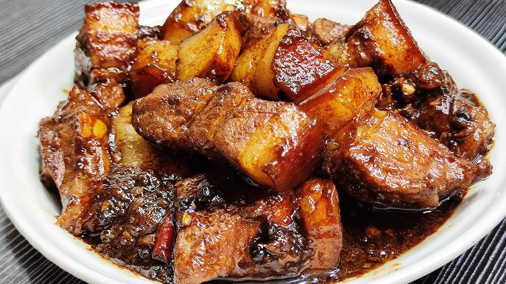

Adobong Baboy

Description
Adobong Baboy is a classic Filipino dish made with pork marinated and cooked in a savory mixture of soy sauce, vinegar, garlic, bay leaves, and black peppercorns. This flavorful stew is known for its tender meat and rich sauce, making it a beloved comfort food in the Philippines.
Ingredients
- Pork:1 to 2 lbs of pork belly (liempo) or pork shoulder (kasim), cut into cubes.
- Vinegar:½ cup of white distilled vinegar or cane vinegar.
- Soy Sauce:½ cup of soy sauce (provides saltiness and the deep brown color).
- Garlic:5 to 10 cloves, crushed or minced.
- Bay Leaves:3 to 4 dried pieces (laurel).
- Peppercorns:1 to 2 teaspoons of whole black peppercorns.
Steps | Instructions
Home